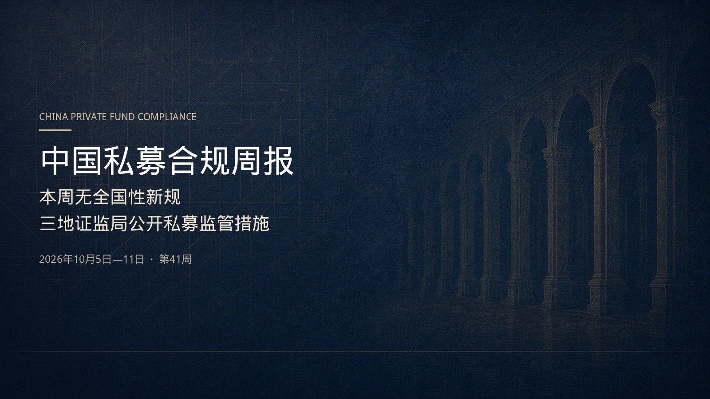

发布用法：浏览器打开后，选中下方白色卡片复制，粘贴到公众号图文编辑器。封面请单独上传 assets/w41/cover-wechat-2351.jpg（头条 2.35:1；另有 900×383 副本 cover-wechat-2351-900.jpg）。分享图用 assets/w41/cover-1x1.jpg。若中文文件名打不开，改用 weekly-wechat-20261005-11.html。资料核验截止 2026年10月12日。非投资建议。

覆盖2026年10月5日至11日。证监会、基金业协会、国务院及司法部法规库本周均未见新的全国性私募正式规则，协会也未公告统一AMBERS字段或报送流程调整。
真正新增的公开信息，仍是三地证监局对三家管理人及相关责任人采取的行政监管措施，不是行政处罚：杭州图灵及王晓妍、李琼被出具警示函；成都仁道及辛念军、曹兴华被出具警示函；哈尔滨经云被责令改正，刘晓雪被出具警示函。决定作出日期与网站公开日期并不重合。这是辖区个案，不能外推为全国监管口径已经变化。
本周判断
新规则与统一流程：无。
执法公开：有，且只在派出机构层面。协会本周未见新的纪律处分决定书，也未见失联认定、注销或第9期管理人月报。
征求意见：无新的私募专门稿。10月9日见诸证监会新闻的，是公募《公开募集证券投资基金运作管理办法（征求意见稿）》，不是私募规则。募集办法征求意见已于10月4日截止，截至核验日仍未见正式稿。
本周写入台账的，是三家管理人、五名责任人的决定书。配图为示意图，不指向特定机构。
杭州图灵：出具警示函，记入诚信档案
浙江证监局 决定日期2026年10月8日 网站公开2026年10月9日 页面未列文号
浙江证监局对杭州图灵资产管理有限公司采取出具警示函的监督管理措施，并记入证券期货市场诚信档案。决定书认定，公司在开展私募基金业务、接受监督检查中存在以下情形，原文分列七项：
一、不配合监管机构依法进行的监督检查；
二、宣传推介材料存在虚假记载；
三、不公平对待同一基金的不同投资者，损害部分投资者利益；
四、向投资者披露的信息不准确、完整；
五、未保持应有的独立性，与关联方人员混同办公；
六、投资决策相关内部制度执行不到位；
七、投资者适当性程序违规。
主要依据：《关于加强私募投资基金监管的若干规定》（证监会公告〔2020〕71号）第六条第一款第六项、第九条第一款第五项；《私募投资基金监督管理条例》第三条第三款、第三十二条第一项、第四十一条第二款。措施依据为《私募条例》第四十条第二款。公司须在收到决定书之日起15个工作日内向浙江证监局提交书面报告。
王晓妍，公司法定代表人、总经理，对上述违规行为负主要责任，被出具警示函并记入诚信档案。李琼，公司合规风控负责人，对上述合规性违规行为负主要责任，被出具警示函并记入诚信档案。两人均须在收到决定书之日起15个工作日内提交书面报告。人员决定书另引《私募条例》第三条第四款。
公司决定书：https://www.csrc.gov.cn/zhejiang/c103952/c7663280/content.shtml
王晓妍：https://www.csrc.gov.cn/zhejiang/c103952/c7663293/content.shtml
李琼：https://www.csrc.gov.cn/zhejiang/c103952/c7663289/content.shtml
成都仁道：出具警示函，记入诚信档案
四川证监局 决定日期2026年9月24日 网站公开2026年10月10日 〔2026〕66号、67号、68号
四川证监局对成都仁道财富投资管理有限公司采取出具警示函的行政监管措施，并记入证券期货市场诚信档案，文号〔2026〕66号。决定书认定公司存在以下行为，原文分列六项：
一是长期无专职合规风控负责人，委托他人报送信息，内部制度执行不到位，未充分履行谨慎勤勉义务；
二是未按规定填报更新从业人员信息和所管理私募基金的投资运作情况；
三是未按规定报送年度财务报告；
四是未妥善保存投资者适当性管理资料；
五是未建立从业人员投资申报、登记、审查、处置管理制度；
六是未建立关联交易管理制度。
主要依据：《私募条例》第三条第三款、第二十六条第二款、第二十八条第一款；《私募投资基金监督管理暂行办法》（证监会令第105号）第四条第一款、第二十五条第一款、第二十五条第二款、第二十六条。措施依据为《私募条例》第四十条第二款和《私募办法》第三十三条。公司须在收到决定书之日起30日内完成整改，并向四川证监局提交书面整改报告。
辛念军，公司时任总经理，〔2026〕67号，被出具警示函并记入诚信档案。曹兴华，公司时任法定代表人、副总经理，〔2026〕68号，被出具警示函并记入诚信档案。两人对公司上述违规行为负有责任。人员决定书另引《私募条例》第三条第四款、《暂行办法》第四条第二款，未另列书面报告期限。
公司决定书：https://www.csrc.gov.cn/sichuan/c104902/c7663696/content.shtml
辛念军：https://www.csrc.gov.cn/sichuan/c104902/c7663699/content.shtml
曹兴华：https://www.csrc.gov.cn/sichuan/c104902/c7663701/content.shtml
哈尔滨经云：责令改正；刘晓雪出具警示函
黑龙江证监局 决定日期2026年9月22日 网站公开2026年10月9日 监管措施〔2026〕16号、15号
黑龙江证监局对哈尔滨经云创业投资有限公司采取责令改正行政监管措施，文号监管措施〔2026〕16号。公司决定书未写记入诚信档案。决定书认定的行为原文只有两项：
一是未按照基金合同约定进行投资；
二是基金列支与投资运作无关费用。
主要依据：《私募条例》第十一条第一款第三项，《私募投资基金监督管理暂行办法》第四条第一款。措施依据为《证券期货市场监督管理措施实施办法》（证监会令第231号）和《私募办法》第三十三条。公司须在收到决定书之日起30日内向黑龙江证监局提交书面整改报告。
刘晓雪，公司法定代表人、董事长，对上述违规行为负有主要责任，被出具警示函，文号监管措施〔2026〕15号。人员决定书未写记入诚信档案，也未另列书面报告期限。
公司决定书：https://www.csrc.gov.cn/heilongjiang/c103838/c7663129/content.shtml
刘晓雪：https://www.csrc.gov.cn/heilongjiang/c103838/c7663126/content.shtml
从三份决定看内部对照
以下只是根据已公开决定整理的抽查方向，不是新的普遍规则，更不能把上述措施种类或幅度套用到其他管理人。
对照杭州图灵：检查是否配合；宣传推介材料有无虚假记载；同一基金不同投资者是否被公平对待；向投资者披露的信息是否准确、完整；是否与关联方人员混同办公；投决制度是否执行；适当性程序是否合规。
对照成都仁道：是否有专职合规风控、信息是否由本机构人员报送；人员信息和基金运作情况、年报是否更新；适当性资料是否保存；从业人员投资申报、登记、审查、处置制度以及关联交易管理制度是否建立。
对照哈尔滨经云：投资是否按基金合同执行；列支费用是否与投资运作相关。
规则没有在本周更新，台账上的日期并没有因此往后推。
不必误读的三件事
协会资产管理业务综合报送平台、从业人员管理平台，按2026年9月21日通知，已于10月7日24:00结束暂停服务窗口。协会本周未见新的恢复、延期或字段调整公告。停机结束不是AMBERS改字段。各机构是否已经可以登录，以本机构实际状态为准。
https://www.amac.org.cn/xwfb/tzgg/202609/t20260921_28104.html
证监会10月9日就公募基金运作办法及配套规则公开征求意见，新闻稿写明对象是公募投资运作，不能写成私募新规。
https://www.csrc.gov.cn/csrc/c100028/c7663393/content.shtml
《私募投资基金募集监督管理办法（征求意见稿）》反馈期已于10月4日结束。截至10月12日，页面仍为征求意见通知。征求意见稿不是已生效规则，不得对外宣传「新规已实施」，也不得按征求意见稿提前改合格投资者法定标准。
近期节点
10月15日 人力资源 / 合规
协会考试管理细则征求意见截止。如需反馈，发至 zgksh@amac.org.cn。这是考试管理规则，不是募集或备案规则。
10月31日 信披 / 估值 / 托管
证券类产品2026年三季报向投资者披露。与托管人统一净值、杠杆、流动性受限资产、关联交易和穿透口径；重大事项仍按5个工作日临时报告，不要等季报一并披露。
已生效 市场 / 合规 / 信息技术
《金融产品网络营销管理办法》已于9月30日施行。私募类产品不得面向不特定对象做网络营销，也不得通过第三方互联网平台做网络营销。
考试细则：https://www.amac.org.cn/xwfb/tzgg/202609/t20260924_28121.html
信披办法：https://www.gov.cn/gongbao/2026/issue_12766/202605/content_7070595.html
网络营销办法：https://www.pbc.gov.cn/tiaofasi/144941/3581332/2026042416471211132/index.html
声明
本文只做合规信息跟踪，不构成对任何证券、基金或策略的推介。非投资建议。下期覆盖2026年10月12日至18日，将重新检索官方来源。
资料核验截止：2026年10月12日。下次更新：2026年10月19日08:00（北京时间）。